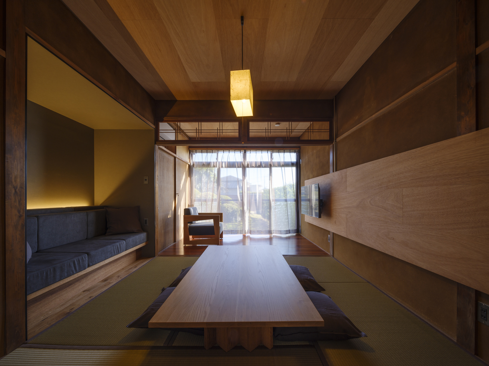
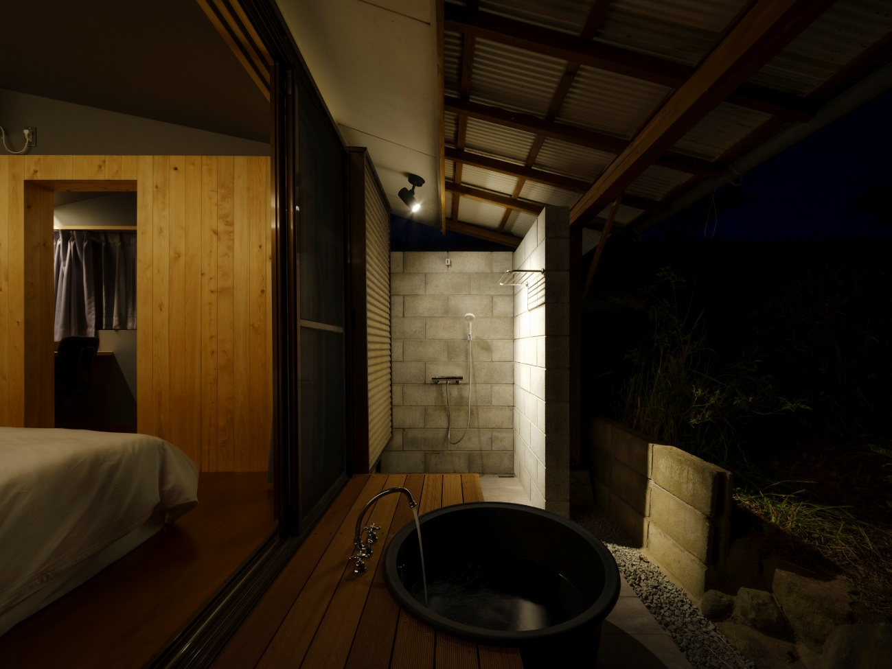
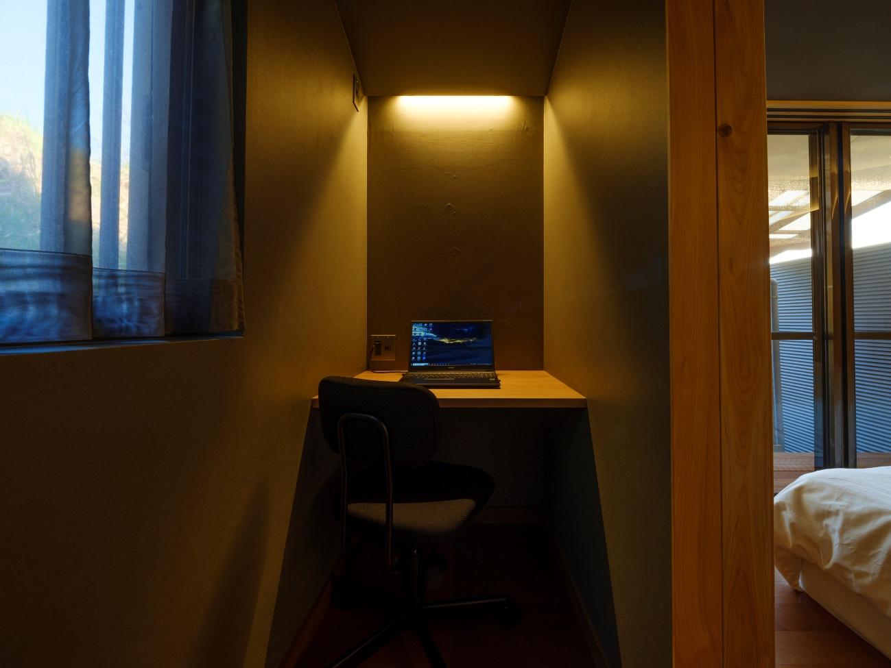
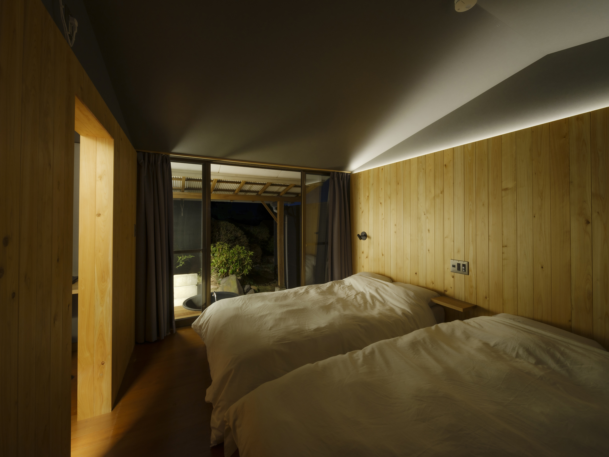

THE SPACE
Inside Yohaku
A Showa-era farmhouse restored with care — plastered walls intact,
tatami laid fresh, the engawa widened to face the bay.
Old bones, new life.

Living Room & Tatami
Wood and washi — the quiet pulse of a Japanese interior.

Engawa & Bay View
Omura Bay through the frame of the engawa. Morning or evening, it's yours alone.

Full Kitchen
Cook with local ingredients from the nearby supermarket.

Open-Air Bath
Soak under the night sky and let the day dissolve.

Workspace
Wi-Fi included. Workation-ready for extended stays.

Bedroom
Double & semi-double beds, tatami futons available on request.